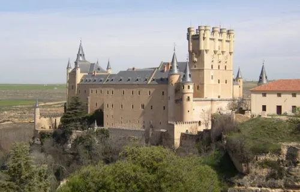

Aunque hay restos de época romana, los cimientos de este palacio-fortaleza de cuento de hadas hunden sus raíces en el periodo andalusí. Tras la conquista cristiana por Alfonso VI, comenzó a transformarse. Fue la residencia favorita de varios reyes de Castilla, quienes lo ampliaron y decoraron con lujo medieval. Su famosa silueta de proa de barco y sus torreones puntiagudos inspiraron, de hecho, los icónicos castillos de las películas de animación.
En la actualidad es uno de los monumentos más visitados de España. Aloja el Archivo General Militar de Segovia y funciona como un museo histórico donde los visitantes pueden recorrer sus salones regios, la sala de armas y subir a la Torre de Juan II para disfrutar de unas vistas impresionantes de la ciudad.